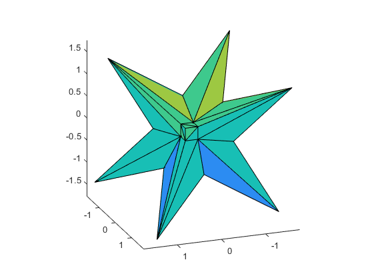

DEMOACCSUMDOT Accurate summation and dot products
Contents
Accurate summation
Recently I published various algorithms for the accurate computation of sums and dot products. A typical application is the accurate computation of a residual.
First, define an ill-conditioned matrix, the inverse Hilbert matrix as provided by Matlab (we display only the upper left corner of A):
format short
n = 10;
A = invhilb(n);
v = 1:4;
A(v,v)
cond(A)
ans =
1.0e+09 *
0.0000 -0.0000 0.0001 -0.0006
-0.0000 0.0003 -0.0059 0.0476
0.0001 -0.0059 0.1129 -0.9514
-0.0006 0.0476 -0.9514 8.2450
ans =
1.6032e+13
We calculate a right hand side such that the solution is the vector of 1's. Since the matrix entries are not too large integers, the true solution is indeed the vector of 1's.
The approximate solution by the built-in Matlab routine is moderately accurate, as expected by the condition number of the matrix.
format long
b = A*ones(n,1);
xs = A\b
xs = 1.000036963700910 1.000032534907936 1.000029059745948 1.000026258595577 1.000023951991110 1.000022019195627 1.000020375916353 1.000018961486942 1.000017731116208 1.000016651005808
Residual iteration
If one residual iteration is performed in working precision, Skeel proved that the result becomes backward stable; however, the forward error does not improve. We display the result after five iterations.
for i=1:5 xs = xs - A\(A*xs-b); end xs
xs = 0.999950171976173 0.999956771206060 0.999961782705104 0.999965728536605 0.999968921390461 0.999971561030115 0.999973781525369 0.999975676437791 0.999977313165910 0.999978741558746
Accurate residual iteration
This changes when calculating the residual in double the working precision. After four iterations the approximation is fully accurate.
for i=1:4 xs = xs - A\Dot_(A,xs,-1,b); end xs
xs =
1
1
1
1
1
1
1
1
1
1
Note that the residual is calculated "as if" in double the working precision, but the result of the dot product is stored in working precision.
Verified inclusion
The same principle is used in the verification routine verifylss. There is a choice how to calculate the residual:
intvalinit('ImprovedResidual')
X1 = verifylss(A,b)
===> Improved residual calculation in verifylss intval X1 = 1.0000000_______ 1.0000000_______ 1.0000000_______ 1.0000000_______ 1.0000000_______ 1.0000000_______ 1.0000000_______ 1.0000000_______ 1.0000000_______ 1.0000000_______
A heuristic is used to improved the accuracy. It is fast, but not necessarily accurate ("poor men's residual"). Calculating the residual as above is slower but more accurate:
intvalinit('QuadrupleResidual')
X2 = verifylss(A,b)
===> Quadruple precision residual calculation by Dot_ in verifylss intval X2 = 1.00000000000000 1.00000000000000 1.00000000000000 1.00000000000000 1.00000000000000 1.00000000000000 1.00000000000000 1.00000000000000 1.00000000000000 1.00000000000000
Very ill-conditioned matrices
Next we use an extremely ill-conditioned matrix proposed by Boothroyd (we show some entries of the upper left corner). As before the right hand side is computed such that the exact solution is the vector of 1's.
n = 15; [A,Ainv] = boothroyd(n); A(v,v) b = A*ones(n,1);
ans =
15 105 455 1365
120 1120 5460 17472
680 7140 37128 123760
3060 34272 185640 636480
Since the inverse is the original matrix with a checkerboard sign distribution and thus explicitly known, the condition number is just the norm of A squared.
format short
cnd = norm(A)*norm(Ainv)
cnd = 1.5132e+23
As expected, the Matlab approximation has no correct digit, even the sign is not correct.
xs = A\b
Warning: Matrix is close to singular or badly scaled. Results may be inaccurate.
RCOND = 4.637215e-22.
xs =
1.0001
0.9993
1.0039
0.9841
1.0530
0.8424
1.4375
-0.1686
4.0466
-6.7654
20.2686
-45.3044
108.3757
-238.9082
517.5592
Using accurate dot products based on error-free transformations, an inclusion of the solution can be calculated:
format long _ X = verifylss(A,b,'illco')
intval X = 1.00000000000000 1.0000000000000_ 1.0000000000000_ 1.00000000000___ 1.00000000000___ 1.0000000000____ 1.0000000000____ 1.000000000_____ 1.000000000_____ 1.00000000______ 1.00000000______ 1.00000000______ 1.00000000______ 1.0000000_______ 1.0000000_______
Extremely ill-conditioned sums and dot products
There are routines to generate extremely ill-conditioned sums and dot products. Consider
n = 50; cnd = 1e25; [x,y,c] = GenDot(n,cnd);
Computation "as if" in K-fold precision
Vectors x and y of length n are generated such the condition number of the dot product is cnd=1e25 and the true value of x'*y is c. Therefore it can be expected that a floating-point approximation has no correct digit, in fact true result and approximation differ significantly in magnitude:
c x'*y
c =
1.269781847189775
ans =
-2.835349504000000e+09
The computation of x'*y in double the working precision gives a more accurate approximation:
c Dot_(x',y)
c = 1.269781847189775 ans = 1.269782304763794
A result "as if" computed in triple the working precision and rounded into working precision is accurate to the last bit:
c Dot_(x',y,3)
c = 1.269781847189775 ans = 1.269781847189775
Accurate approximation
An alternative is to use error-free transformation to compute faithfully rounded result, independent of the condition number. For an extremely ill-conditioned dot product with condition number 1e100 the result is still accurate to the last bit.
n = 50; cnd = 1e100; [x,y,c] = GenDot(n,cnd); c AccDot(x',y)
c = -1.054032714200034 ans = -1.054032714200034
An inclusion of the result can be computed as well:
c infsup(AccDot(x',y,[]))
c = -1.054032714200034 intval = [ -1.05403271420004, -1.05403271420003]
Hidden line
There is quite some effort in computer geometry to design properly working hidden line algorithms. Of course, the decision whether a point is visible or not is simply decided by the sign of some dot product. It seems hard to believe, but evaluating dot products in double precision is sometimes not enough to make the correct decision and pictures are blurred. In that case an accurate dot product may help.
The following graph shows the solution set of an interval linear system as on the cover of Arnold's book. When executing this in Matlab and rotating the graph, sometimes the display is not correct.
format short
A = ones(3)*infsup(0,2); A(1:4:end) = 3.5
b = ones(3,1)*infsup(-1,1)
plotlinsol(A,b)
view(-200,20)
intval A = [ 3.5000, 3.5000] [ 0.0000, 2.0000] [ 0.0000, 2.0000] [ 0.0000, 2.0000] [ 3.5000, 3.5000] [ 0.0000, 2.0000] [ 0.0000, 2.0000] [ 0.0000, 2.0000] [ 3.5000, 3.5000] intval b = [ -1.0000, 1.0000] [ -1.0000, 1.0000] [ -1.0000, 1.0000] intval ans = [ -1.7648, 1.7648] [ -1.7648, 1.7648] [ -1.7648, 1.7648]
Enjoy INTLAB
INTLAB was designed and written by S.M. Rump, head of the Institute for Reliable Computing, Hamburg University of Technology. Suggestions are always welcome to rump (at) tuhh.de